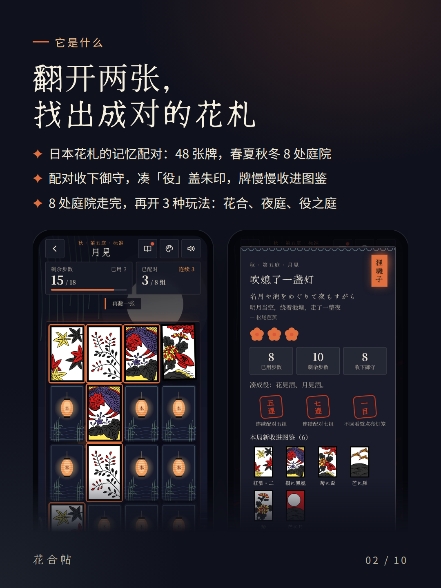
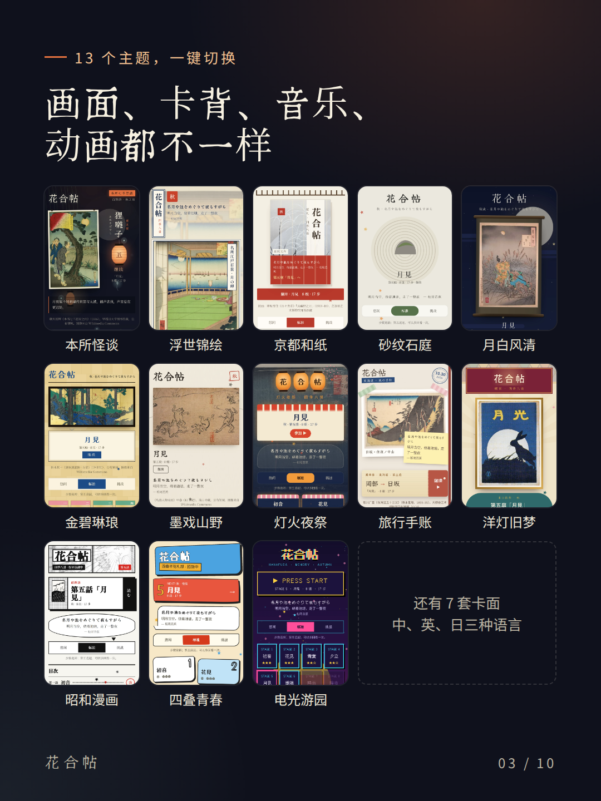
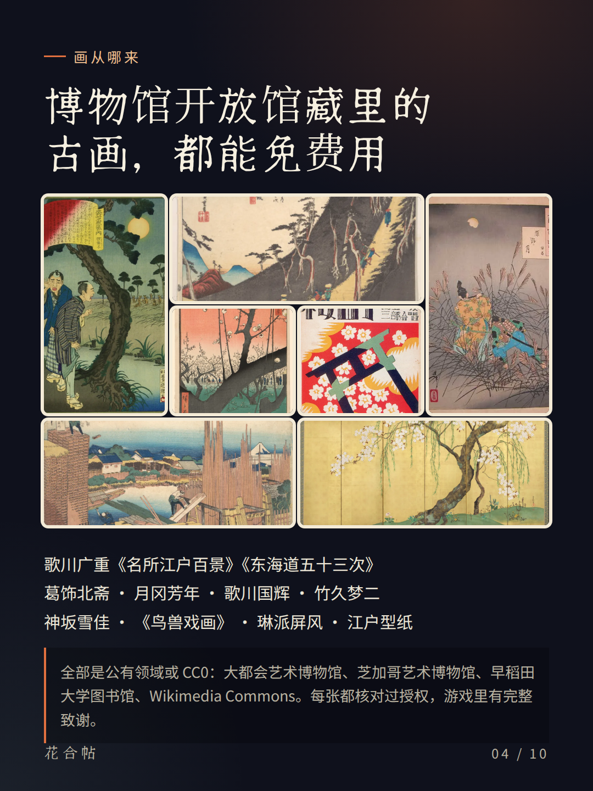
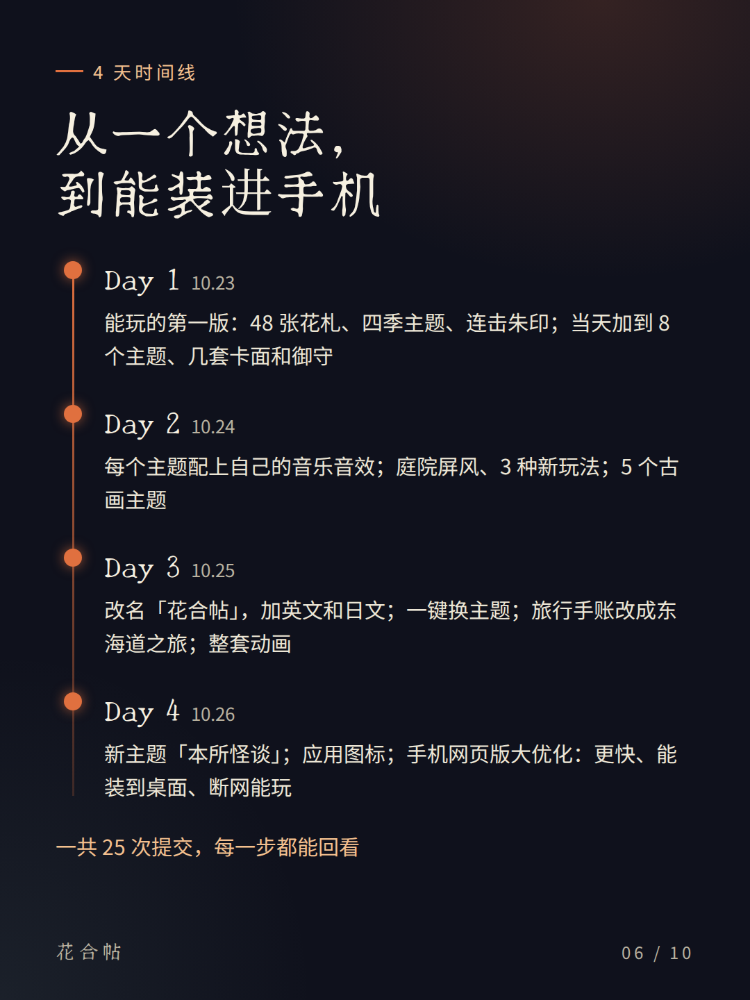
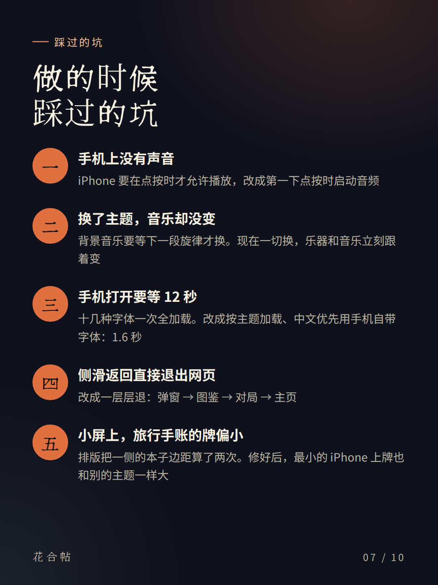
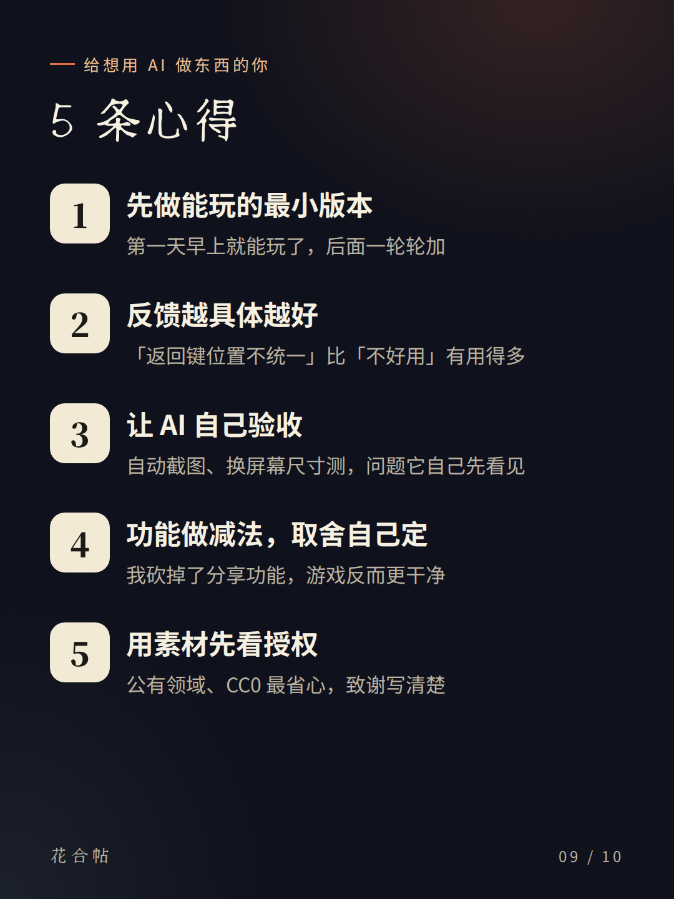
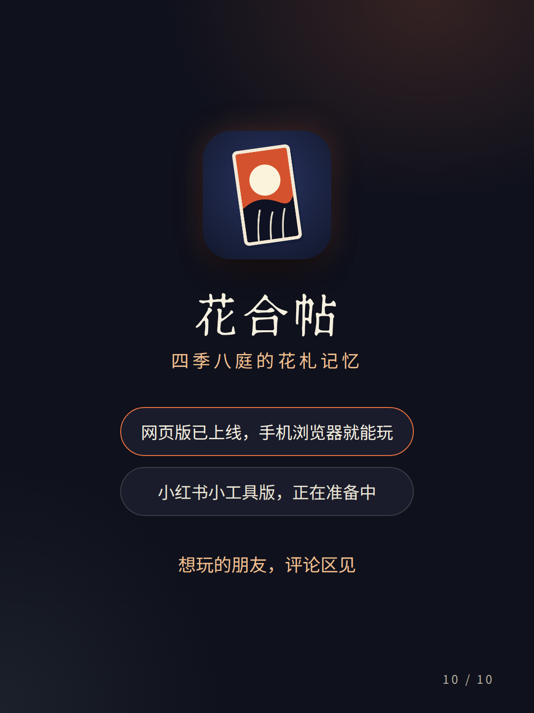

10 张 3:4 图片，加上标题、正文和话题，按顺序发就行。文案里只写了已经上线的网页版，小红书小工具标成「正在准备中」。







每张 1080 × 1440，小红书 3:4 竖图的标准尺寸。电脑上这些图也在项目的 docs/xhs-note/png 文件夹里。
我和AI用4天做了款花札游戏🎴
最近和 AI 一起做了个小游戏：「花合帖」🎴 日本花札的记忆配对——翻开两张，找出成对的花札，沿着春夏秋冬走完八处庭院。 ✨ 做了些什么 · 48 张花札、8 处庭院，走完再开 3 种玩法 · 13 个主题一键切换：浮世绘、京都和纸、月夜卷轴、金屏风、鸟兽戏画、东海道手账、本所怪谈……画面、卡背、音乐、动画都不一样 · 画都来自博物馆开放馆藏（公有领域 / CC0）：广重、北斋、芳年、国辉、梦二…… · 中、英、日三种语言 🤝 怎么和 AI 分工 我负责想法和取舍，算是产品经理 + 第一个玩家；AI（我用的是 Claude Code）负责写代码、找素材核授权、做声音动画、翻译和测试。 我说「返回键位置不统一」「切换主题后音效没变化」「分享功能不太实用，可以去掉」，它就改好、自己测完、截图给我看。 🕳 踩过的坑 · 手机打开要等 12 秒 → 字体按需加载，现在 1.6 秒 · 侧滑返回直接退出网页 → 改成一层层退回 · 换了主题音乐不变 → 一切换立刻换乐器 💡 几点心得 ① 先做能玩的最小版本，再一轮轮加 ② 反馈越具体越好 ③ 让 AI 自己测、自己截图 ④ 功能做减法，取舍自己定 ⑤ 用素材先看授权 现在网页版已经上线，用手机浏览器就能玩，还能添加到主屏幕；小红书小工具版正在准备中。想玩的朋友评论区见👇
#AI做游戏 #花札 #独立游戏 #浮世绘 #ClaudeCode #小游戏 #记忆游戏 #日本文化 #AI编程